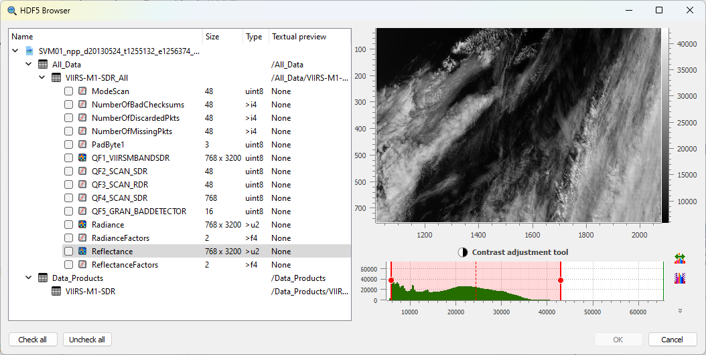

HDF5 Browser#
The “HDF5 Browser” is a modal dialog box allowing to import almost any 1D and 2D data into DataLab workspace (and eventually metadata).
Compatible curve or image data are displayed in a hierarchical view on the left panel, as well as other scalar data (scalar values are just shown for context purpose and may not be imported into DataLab workspace).
The right panel displays the selected curve or image data. It also shows information on “Group” (path, description, etc.) and “Attributes” (names and values).
- The HDF5 browser is fairly simple to use:
On the left panel, select the curve or image data you want to import
Selected data is plotted on the right panel
Click on “Check all” if you want to import all compatible data
Then validate by clicking on “OK”
Note
The HDF5 browser may be used to explore multiple HDF5 files at once, thus allowing to import data from different files into the same DataLab workspace.